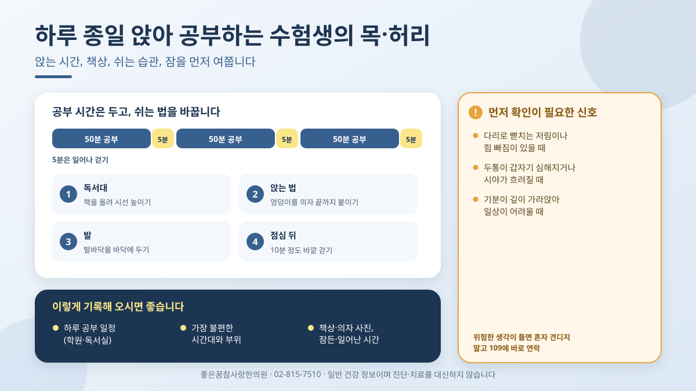

이종호 한의사 감수좋은꿈참사랑한의원 대표원장 (한의사 면허번호 19769)발행 2026-11-23 · 수정 2026-11-25
이 글의 차례
하루 종일 독서실 의자에 앉아 공부하다 목과 허리가 굳어 버렸다면, 공부 시간부터 줄이실 필요는 없습니다. 저는 하루를 어떻게 앉아 보내는지, 책상과 의자는 몸에 맞는지, 언제 일어나 쉬는지, 잠은 몇 시간 자는지를 먼저 여쭙고, 앉은 자세와 목·허리의 움직임, 척추와 골반의 균형을 함께 살핍니다.
같은 시간을 앉아 있더라도 덜 무리하게 앉는 방법을 찾는 것이 목표입니다. 다만 다리로 뻗치는 저림이나 힘 빠짐, 대소변 이상이 있다면 자세를 고치기보다 확인이 먼저입니다.
아침 7시 40분, 노량진역 앞 횡단보도는 무거운 가방을 멘 사람들로 붐빕니다. 8시 강의를 듣고, 점심은 학원 근처에서 컵밥으로 10분 만에 해결하고, 오후 1시부터 밤 10시까지는 독서실 칸막이 책상 앞입니다. 타이머를 누르고 문제집을 펴면 두 시간이 훌쩍 지나 있습니다.
화장실에 가려고 일어서는데 허리가 한 번에 펴지지 않고, 고개를 들면 목 뒤가 뻣뻣하게 당깁니다.
엉덩이 아래는 저릿하고, 어깨를 한 바퀴 돌리면 뚝 소리가 납니다. 그래도 다시 앉습니다. 오늘 분량이 아직 절반이나 남았으니까요. 그렇게 몇 달을 버티다 보면 아픈 것이 하루의 배경음처럼 익숙해집니다.
진료실에서 이런 말씀을 자주 듣습니다. 공부 시간은 줄일 수 없는데 앉아 있는 게 갈수록 힘들다고요. 목이 아파 집중이 흐트러지고, 집중이 안 되니 더 오래 앉아 있게 되고, 그러다 허리까지 아프다고요. 몸이 아프다는 말을 꺼내는 것조차 미안해하며, 다들 버티는데 나만 엄살 부리는 것 같다고 하시는 분도 있습니다.
저는 그 말을 들으면 그동안 얼마나 애쓰셨을까 싶습니다. 하루 열 시간 넘게 같은 의자에 앉아 있는 건 그 자체로 몸에 큰 짐을 지우는 일입니다. 엄살이 아닙니다. 그만큼 오래 버텨 오셨다는 뜻이지요.
아픈 곳과 원인이 있는 곳은 다를 수 있습니다
목, 어깨, 허리의 통증에는 근육과 인대, 관절, 신경이 함께 관여합니다. 통증이 느껴지는 곳과 통증에 영향을 주는 곳이 꼭 같지는 않아서, 저는 아픈 곳만 보지 않고 몸이 어떻게 움직이는지를 함께 살핍니다. 오래 앉아 공부하는 분의 허리 통증도 그렇습니다. 허리가 아프다고 오셨는데 실은 엉덩이와 허벅지 뒤쪽이 먼저 굳어 있는 경우가 많습니다.
사람의 몸은 서서 걷도록 만들어져 허리 아래쪽에 늘 체중이 실립니다. 허리는 원래 앞으로 살짝 휘어진 곡선을 가지고 있는데, 오래 앉아 있으면 이 곡선이 펴지기 쉽습니다. 특히 엉덩이를 의자 앞쪽으로 빼고 등을 기대 미끄러지듯 앉으면 허리 아래쪽 디스크와 주변 근육이 받는 부담이 커집니다. 공부에 몰입할수록 몸은 이런 자세로 서서히 무너집니다.
앉아 있는 내내 엉덩이 근육은 눌린 채 쉬고, 허벅지 뒤쪽 근육은 짧아진 채 굳어 갑니다. 그러다 일어서거나 걸을 때 엉덩이가 제 몫을 못 하면 허리가 대신 일을 떠맡습니다. 두 시간쯤 앉았다 일어설 때 허리가 한 번에 펴지지 않는 데에는 이런 사정이 숨어 있습니다.
허리 통증이 자꾸 되풀이되는 분일수록 아픈 그 순간보다 다시 아파지기까지의 하루를 들여다볼 필요가 있습니다.
목은 고개를 숙이는 만큼 일이 늘어납니다. 고개를 숙일수록 목이 받치는 부담이 커진다는 건 잘 알려져 있지요. 문제집을 책상에 평평하게 놓고 보면 시선이 아래로 떨어지고, 머리는 점점 앞으로 나옵니다. 쉬는 시간에 휴대폰으로 강의를 다시 보거나 단어 앱을 켜면, 쉬는 시간마저 고개 숙인 자세가 이어집니다.
몸은 따로따로 움직이지 않습니다. 시험이 다가올수록 어깨가 귀 쪽으로 올라가고, 문제가 안 풀릴 때 이를 꽉 무는 분이 많은데, 그러면 턱과 관자놀이, 목 옆까지 함께 뻣뻣해집니다. 잠을 못 자면 같은 통증도 더 크게 느끼고, 긴장이 풀리지 않으면 소화도 무거워집니다.
통증 때문에 잠을 설치고, 잠을 설쳐서 통증이 더 심해지는 고리가 생기기 쉬운 것도 그래서입니다.
잠은 낮 동안 쓴 몸을 정리하고 회복하는 시간입니다. 그런데 수험 기간에는 그 시간이 가장 먼저 줄어듭니다. 저는 잠이 보약이라는 말을 진료실에서 자주 꺼내는데, 오래 누워 있는 시간보다 얼마나 깊이, 끊기지 않고 자는지를 더 눈여겨봅니다. 그래서 이 고리를 끊는 실마리를 공부 시간이 아니라 앉는 법과 쉬는 법, 자는 법에서 찾자고 말씀드립니다.
이런 분들을 자주 뵙습니다
아침 강의, 오후 자습, 밤 복습으로 하루가 거의 똑같이 굴러가는 분들이 많습니다. 몇 달째 같은 책상, 같은 의자, 같은 자세입니다. 이런 분께는 쉬는 시간만큼은 휴대폰을 내려놓고 일어나 창밖처럼 먼 곳을 보자고 말씀드립니다. 5분이지만, 목이 고개를 들고 쉴 수 있는 몇 안 되는 시간일 수도 있으니까요.
인강 위주로 집이나 스터디카페에서 노트북으로 공부하는 분들도 자주 뵙습니다. 노트북은 화면이 낮고 키보드가 화면에 붙어 있어서, 화면을 보려면 고개를 숙이고 타이핑을 하려면 어깨가 앞으로 말립니다. 노트북 아래에 받침대나 두꺼운 책을 받쳐 화면 위쪽을 눈높이 가까이 올리고, 필기가 많다면 따로 키보드를 쓰시라고 권합니다.
작은 변화지만 하루 열 시간이면 차이가 쌓입니다.
모의고사나 시험 직전에 잠을 줄여 몰아치는 분들도 있습니다. 새벽 두세 시에 자고 여섯 시에 일어나는 날이 이어지면, 허리와 목이 아파도 운동은 사치처럼 느껴집니다. 저는 이런 분께 운동 시간을 따로 내라고 하기보다 점심 뒤 10분 걷기 하나만 지켜 보자고 합니다. 그리고 잠드는 시각을 한 시간이라도 앞당길 수 있는지 함께 봅니다.
의자 위에 한쪽 다리를 올리거나 양반다리로 앉는 습관이 있는 분도 많습니다. 그 자세가 편하게 느껴지는 건 이미 몸이 한쪽으로 기운 데 익숙해져 있어서일 때가 있습니다. 골반 한쪽과 허리 한쪽이 유난히 뻐근하다면 앉는 습관부터 함께 들여다봅니다. 어느 쪽 다리를 올리는지 스스로 알아차리는 것만으로도 시작이 됩니다.
독서실 책상에서 바로 해 볼 수 있는 것
먼저 앉는 법입니다. 엉덩이를 의자 등받이 쪽 끝까지 깊숙이 넣고, 허리 뒤에 작은 쿠션이나 둘둘 만 수건을 대어 허리의 자연스러운 곡선을 받쳐 주세요. 허리를 억지로 꼿꼿이 세우려고 힘을 주면 금방 지칩니다. 곡선을 지킨다는 것은 허리를 젖히는 것이 아니라, 원래 있던 휘어짐이 펴지거나 꺾이지 않게 받쳐 주는 것입니다.
발바닥은 바닥에 편하게 닿아야 합니다. 의자가 높아 발이 뜬다면 발 아래에 상자나 두꺼운 책을 놓으세요. 책은 독서대에 올려 시선이 너무 아래로 떨어지지 않게 하고, 필기할 때는 독서대를 낮추고 읽을 때는 높이는 식으로 바꿔 써도 좋습니다. 스탠드는 책뿐 아니라 책상 전체가 밝도록 비춰야 얼굴을 책에 들이미는 버릇이 줄어듭니다.
시간표에는 쉬는 시간을 먼저 넣습니다. 50분 공부하고 5분은 일어나는 것을 규칙으로 정해 보세요. 타이머가 울리면 문제를 마저 풀고 싶은 마음이 들어도 일단 일어납니다. 일어나서는 복도 끝까지 걸어갔다 오고, 벽에 등을 대고 뒤통수와 어깨, 엉덩이가 함께 닿는지 10초쯤 서 봅니다.
가슴을 펴고 어깨를 뒤로 천천히 다섯 번 돌린 다음, 두 손을 허리에 얹고 허리를 살짝 뒤로 젖혀 봅니다. 젖힐 때 아프거나 다리가 저리면 그 동작은 하지 마세요. 점심을 먹은 뒤에는 10분 정도 바깥을 걸으며 햇빛을 보고 바람을 쐬세요. 앉아 있던 엉덩이와 허벅지가 움직이고, 낮의 햇빛은 밤잠의 리듬을 잡는 데에도 보탬이 될 수 있습니다.
오후에 졸음이 몰려오는 시간에는 서서 할 수 있는 공부, 예를 들어 소리 내어 암기하기나 정리 노트 훑기를 배치해 보세요. 저녁에는 따뜻한 물로 샤워하며 목과 어깨를 데워 주고, 잠자리에 들기 30분 전에는 휴대폰을 내려놓습니다. 일어나는 시각은 주말에도 크게 바꾸지 않는 편이 좋습니다. 베개는 목이 앞으로 꺾이거나 뒤로 젖혀지지 않는 높이면 됩니다.
혹시 이런 날이 많지 않으신가요? 한 번 앉으면 두 시간 넘게 일어나지 않는다. 일어설 때 허리를 펴기까지 몇 걸음이 걸린다. 오후가 되면 목 뒤가 뻐근해 고개를 자꾸 돌린다. 잠자는 시간이 여섯 시간이 안 되는 날이 일주일에 절반을 넘는다. 세 가지 넘게 해당한다면 이번 주에는 50분마다 일어나는 것 하나만 먼저 지켜 보세요.
몰아서 세게보다, 자주 작게
시험이 끝나면 몰아서 운동하겠다는 분, 주말 하루 날을 잡아 두 시간씩 운동하고 오셨다는 분을 만나면 저는 마음이 조금 쓰입니다. 참 열심이신데, 이어 갈 수 없는 강도라면 오래가지 못합니다. 저는 일주일에 한 번 세게 하는 것보다 매일 조금씩, 자주 하는 쪽을 권합니다. 힘이 있는 날에만 하지 말고, 힘이 없는 날에는 힘이 없는 만큼 하는 겁니다.
지키는 순서를 여쭤보시면 저는 먼저 잘 쉬고, 아픈 것은 미루지 않고 치료하고, 그다음에 움직이자고 말씀드립니다. 운동이 필요 없다는 뜻이 아닙니다. 지치고 아픈 몸에 억지로 운동을 얹으면 오래가지 못하기 때문입니다. 작게 불편할 때 물어보시면 좋겠습니다. 크게 키워서 오시면 본인이 가장 힘듭니다.
50분마다 일어나기로 해 놓고 못 지킨 날도 분명 생깁니다. 사람은 생각보다 쉽게 낙담하지요. 그럴 때 스스로를 탓하지 말고 다음 날 다시 하면 됩니다. 저는 큰 목표를 드리기보다 해낼 수 있는 만큼을 함께 정하려고 합니다.
마음은 앞서도 몸이 따라오지 못할 때가 있습니다. 열심히 하려는 마음은 귀하지만, 의지와 욕심이 너무 앞서면 늘 그때 탈이 납니다. 그 크기를 조금 줄여 놓고 그 안에서 꾸준히 하시면 됩니다. 함께 공부하는 친구가 있다면 점심 뒤 10분 걷기를 같이 해 보세요. 혼자 하면 흐지부지되기 쉬운 일도 둘이 하면 오래 갑니다.
시험 날짜가 정해져 있다면 그 날짜에서 거꾸로 계산해 몸 관리 계획을 세우는 것도 방법입니다. 시험이 몇 달 남았다면 앉는 습관과 쉬는 간격을 바꿀 여유가 있고, 몇 주 앞으로 다가왔다면 새로운 운동을 갑자기 시작하기보다 지금의 리듬을 무너뜨리지 않는 쪽에 무게를 둡니다.
진료 일정을 정할 때도 저는 시험 날짜를 먼저 여쭙고 그 날짜에 맞춰 순서를 함께 짭니다. 노량진에서 혼자 지내며 아파도 말할 사람이 없다는 분도 많은데, 그럴 때는 아픈 곳 이야기만 하러 오셔도 괜찮습니다.
얼마나 지켜보고, 언제 진료를 받을까요
앉는 자세와 쉬는 간격을 바꾼 뒤 1~2주는 지켜보세요. 그동안 하루 중 언제 가장 불편한지, 일어날 때와 오후와 밤 가운데 어느 때가 제일 힘든지 짧게 적어 두면 변화를 보기가 쉽습니다. 2주가 넘도록 불편이 그대로이거나 목과 허리 때문에 공부에 집중하기 어려울 정도라면 혼자 참지 마시고 상담을 받아 보세요.
아침에 일어날 때부터 뻣뻣하거나 주말에 쉬어도 가라앉지 않는다면 더 미루지 않는 편이 좋습니다.
다음과 같은 경우에는 기다리지 말고 먼저 해당 진료를 받으세요.
- 다리로 뻗치는 저림이나 힘 빠짐이 있는 경우
- 허리 통증과 함께 대소변 조절이 어렵거나 사타구니 감각이 둔해진 경우
- 팔로 저림이 내려가거나 손에 힘이 빠지는 경우
- 갑자기 생긴 아주 심한 두통이나 시야가 흐려지는 증상이 있는 경우
- 기분이 깊이 가라앉아 일상이 어렵거나 극단적인 생각이 드는 경우(☎ 109)
대소변 조절이 어렵거나 갑자기 아주 심한 두통이 생겼다면 가까운 응급실에서 바로 확인을 받으세요. 마음이 많이 힘들고 위험한 생각이 든다면 혼자 견디지 말고 ☎ 109로 바로 전화해 이야기를 나누세요.
좋은꿈참사랑한의원에 처음 오시면
처음 오시면 저는 하루 공부 일정부터 여쭙습니다. 학원 강의와 자습은 몇 시부터 몇 시까지인지, 한 번 앉으면 얼마나 앉아 있는지, 책상과 의자는 어떤지. 언제부터, 어떤 동작에서, 어디가 아픈지, 예전에 목이나 허리를 다친 적이 있는지, 전에 받아 본 치료가 있는지도 지난 이야기로 듣습니다.
잠은 몇 시에 자고 몇 시에 일어나는지, 끼니는 거르지 않는지, 시험은 언제인지도 함께 여쭙습니다.
그다음 양손을 올려 봐 달라고 말씀드리고 맥을 짚습니다. 오래 버텨 온 몸이 얼마나 지쳐 있는지, 긴장이 얼마나 쌓여 있는지를 가늠해 보려는 것입니다. 맥을 보는 동안에도 몸이 찬 편인지 더운 편인지, 소화와 화장실은 편한지 여쭙습니다. 허리가 아파서 왔는데 왜 이런 걸 묻나 싶으실 수 있지만, 잠과 소화가 흔들리면 같은 통증도 다르게 느껴지기 때문입니다.
이어서 서 있는 자세와 옆모습, 목과 허리를 어느 방향으로 움직일 때 막히는지, 누르면 아픈 곳, 팔다리의 힘과 저림을 확인합니다. 필요하다고 판단될 때는 초음파로 근육과 힘줄 상태를 함께 봅니다. 추나는 뼈를 맞추는 소리를 내는 것이 목표가 아니라 몸이 편안하게 움직일 수 있는 방향을 찾는 것이 목표라서, 그 방향을 찾는 데 이 확인들이 쓰입니다.
그렇게 살핀 것을 모아 침, 약침, 추나 가운데 지금 상태에 맞는 방법을 고르고, 왜 그 방법인지 설명드린 뒤 시작합니다.
순서는 대개 침을 먼저 놓고, 필요하면 추나를 한 뒤 물리치료로 마무리합니다. 세게 하기 전에는 먼저 여쭙습니다. 전에 어지러웠던 적이 있는지, 드시는 약은 무엇인지, 오늘 기운은 어떤지. 치료 중에 힘들면 참지 말고 바로 말씀해 주시고, 치료를 마치면 시원하신지, 괜찮으신지 여쭙고 불편하다고 하시면 다시 봅니다.
진료실을 나서기 전에는 독서실 책상에서 바로 해 볼 자세 조정과 쉬는 방법을 알려 드립니다. 다시 오시면 그사이 가장 불편했던 시간대가 달라졌는지, 정한 쉬는 간격은 지킬 만했는지부터 이어서 여쭙고 계획을 다시 맞춥니다. 평일은 저녁 8시까지, 토·일·공휴일은 오후 3시까지 진료해 학원 일정에 맞춰 오실 수 있습니다.
추나요법의 건강보험 적용 여부와 비용, 몇 번쯤 받게 되는지는 사람마다 달라 방문 전 전화로 확인해 주세요.
오실 때 하루 공부 일정(학원, 독서실, 자습 시간), 가장 불편한 시간대와 부위, 책상과 의자 사진 한 장, 잠든 시각과 일어난 시각, 시험 일정을 메모해 오시면 이야기가 훨씬 빨라집니다. 기억나는 만큼만 적으셔도 괜찮습니다.
마치며
하루 종일 앉아 있는 몸은 불평 한마디 없이 꽤 오래 버텨 줍니다. 목이 뻐근하고 허리가 굳는 건 그 몸이 이제 조금 쉬고 싶다고 보내는 신호일 수 있습니다. 공부를 멈추라는 신호가 아니라, 앉는 법과 쉬는 법을 한번 돌아보자는 신호로 받아 주셨으면 합니다. 시험까지 가는 길은 길고, 그 길을 걸어갈 몸은 하나뿐이니까요.
오늘 독서실에 가시면 타이머 옆에 작은 메모 하나만 붙여 두세요. 50분마다 일어나기. 다음에 저를 만나시면 그 메모를 지킬 만했는지, 하루 중 언제가 가장 힘들었는지부터 여쭙겠습니다.
함께 읽으면 좋은 글
- 오래 공부하는 학생의 책상과 의자는 허리를 위해 어떻게 맞추나요?
- 오래 앉아 공부하거나 일할 때 허리와 골반은 얼마 간격으로 쉬어 주나요?
- 커피와 에너지 음료로 버티다 밤에 잠이 안 올 때는 어떻게 하나요?

아픈 곳과 원인이 있는 곳은 다를 수 있습니다
- 목, 어깨, 허리의 통증에는 근육과 인대, 관절, 신경이 함께 관여합니다.
- 통증이 느껴지는 곳과 통증에 영향을 주는 곳이 꼭 같지는 않아서, 저는 아픈 곳만…
이런 분들을 자주 뵙습니다
- 아침 강의, 오후 자습, 밤 복습으로 하루가 거의 똑같이 굴러가는 분들이 많습니다.
- 몇 달째 같은 책상, 같은 의자, 같은 자세입니다.
독서실 책상에서 바로 해 볼 수 있는 것
- 먼저 앉는 법입니다.
- 엉덩이를 의자 등받이 쪽 끝까지 깊숙이 넣고, 허리 뒤에 작은 쿠션이나 둘둘 만 수…
몰아서 세게보다, 자주 작게
- 시험이 끝나면 몰아서 운동하겠다는 분, 주말 하루 날을 잡아 두 시간씩 운동하고 오…
- 참 열심이신데, 이어 갈 수 없는 강도라면 오래가지 못합니다.
자주 묻는 질문
공부 시간을 줄이기 어려운데 어떻게 하나요?
공부 시간은 그대로 두고, 쉬는 방법과 앉는 자세를 바꾸는 쪽으로 함께 찾습니다.
저녁 늦게도 진료하나요?
평일은 저녁 8시까지 진료합니다. 학원 일정에 맞춰 예약하실 수 있습니다.
추나를 받은 날 독서실에 가서 공부해도 되나요?
대개 평소처럼 지내실 수 있습니다. 다만 그날은 앉아 있는 시간을 평소보다 짧게 끊어 자주 일어나시고, 몸살처럼 뻐근한 느낌이 들면 다음 진료 때 말씀해 주세요.
노량진역에서 어떻게 가나요?
노량진역(1·9호선) 3번 출구에서 마을버스 동작01을 타고 신동아리버파크에서 내리시면 됩니다. 상도역에서는 3번 출구로 나와 약 200m 직진한 뒤 오거리에서 우회전해 약 200m 오시면 됩니다.
진료 시간은 어떻게 되나요?
좋은꿈참사랑한의원은 평일 09:30~20:00(점심 13:00~14:00), 토·일·공휴일 09:30~15:00에 진료합니다.
좋은꿈참사랑한의원은 재진 때 지난번 이야기부터 이어서 여쭙니다. 진료시간과 예약은 오시는 길에서 확인하세요.
어디서 상담받을 수 있나요?
좋은꿈참사랑한의원은 서울 동작구 만양로2길 2 신성빌딩 3층·5층(서울 동작구 상도동, 7호선 상도역 3번 출구 근처)에 있습니다. 한의사 3명(이종호 대표원장, 조영기 수석진료원장, 정원영 진료원장)이 진료합니다. 진료시간은 평일 09:30~20:00(점심 13:00~14:00), 토·일·공휴일 09:30~15:00이며, 방문 전 전화로 확인을 권합니다. 예약은 네이버 예약, 카카오톡 상담, 전화 02-815-7510로 받습니다.
이 글은 일반적인 건강 정보이며 개인의 진단이나 치료를 대신하지 않습니다. 증상이 있거나 복용 중인 약이 있다면 진료를 통해 확인하세요. 치료 효과는 개인마다 다를 수 있습니다.
작성 기준: 일반적으로 알려져 있는 건강 정보를 참고해 정리했습니다(대표원장 감수). 증상 기록은 1~2주 동안 하루 1회, 비슷한 시간에 적어 오시면 지난 상태와 비교하기 쉽습니다.